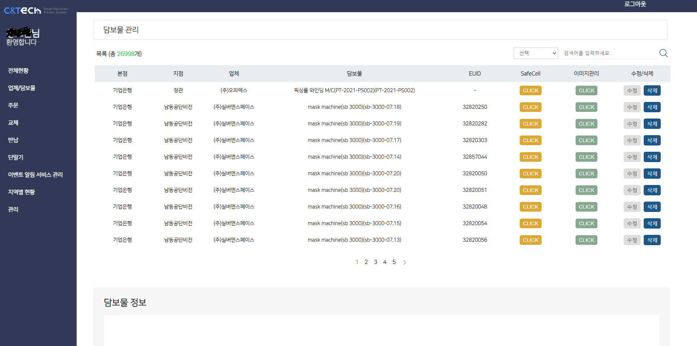

동산담보 시스템
동산담보 시스템은 회사 메인 서비스로 고가의 자산에 IoT디바이스를 부착하여 위치 및 상태를 24시간 모니터링하는 서비스입니다.
주 고객사는 IBK기업이고 그외 은행들도 사용하고 있습니다.
사용자(은행)는 대출 업체, 디바이스, 담보물 정보 및 위치를 확인할 수 있어 고가의 장비를 안전하게 담보대출 할 수 있습니다.
내부인원 부족으로 약 반년간 API 서버, 버전 업데이트 및 AWS Lambda유지보수를 맡아 진행했습니다.
CS팀 에러 사항을 주로 응대했고, 디바이스의 이벤트를 Lambda에서 처리 했는데, Lambda의 수와 코드 양이 많아 SAM을 이용하여 로컬
환경에서 디버깅, 배포 할 수 있게 만들었습니다.
Technologies:
- - JAVA
- - JSP
- - Postgresql
- - MyBatis
- - Python
- - AWS (EC2 & S3 & RDS)
- - AWS (Lambda & DynamoDB)
- - OS(Ubuntu)
동산담보 버전 2 담보물 상세 화면

동산담보 버전 2 담보물 화면

동산담보 버전 3 메인 화면